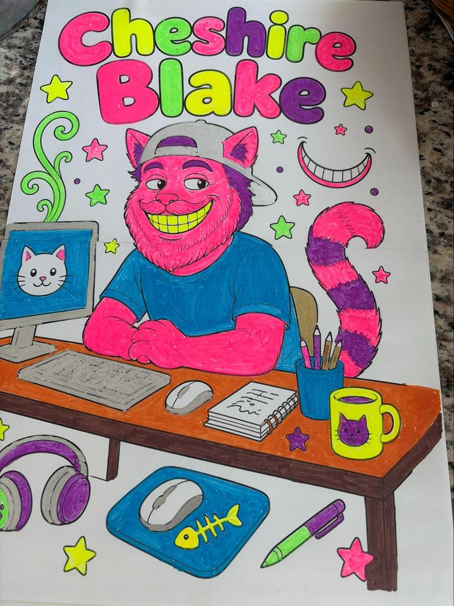
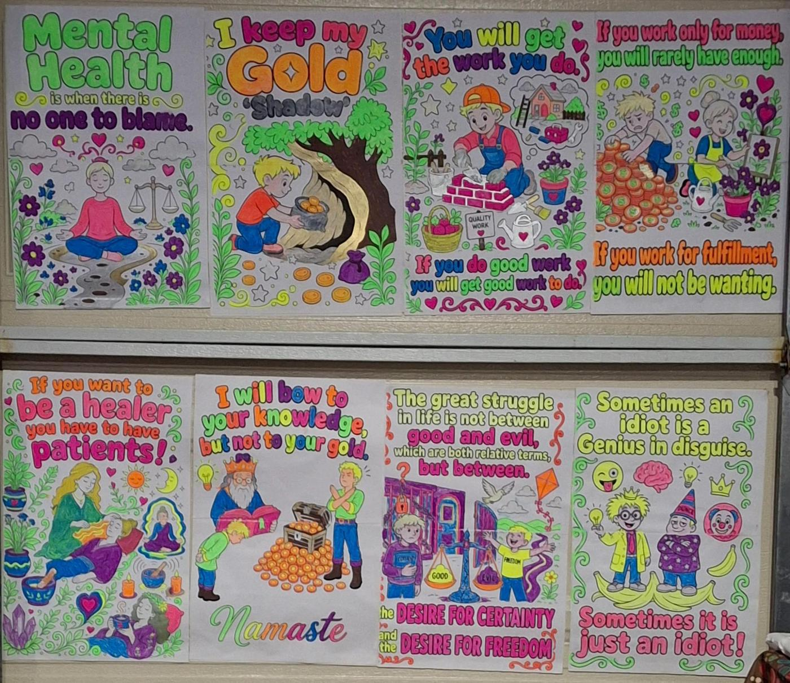
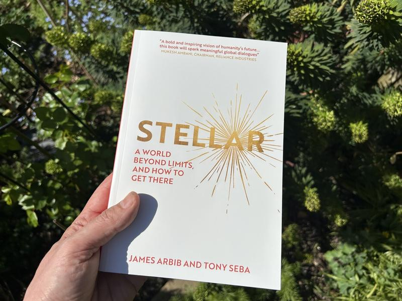
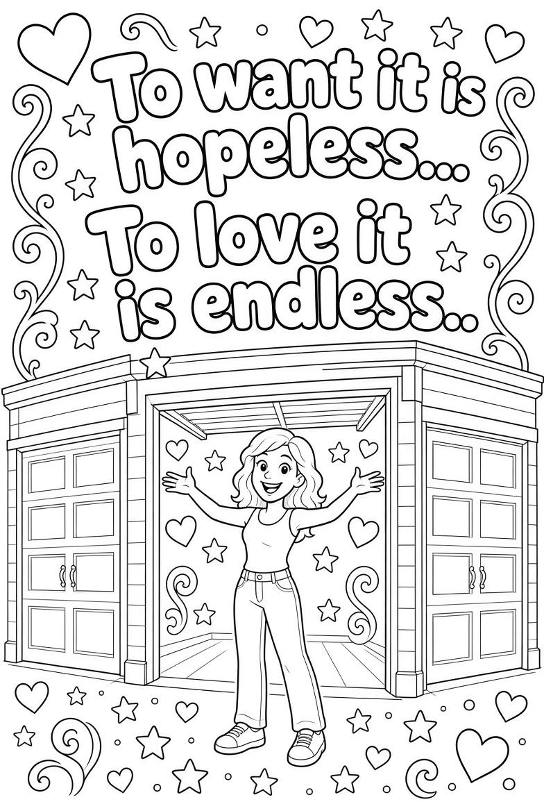
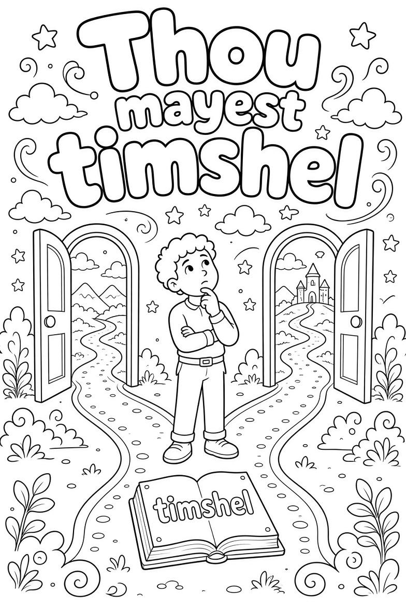

PEPPERWOOD COMMUNITY NEWSLETTER
Information & Entertainment to build community unity

I received an application to serve on the HOA board of directors. I have served on the board before. It is a largely thankless but necessary role in the operation of Pepperwood Villas as a corporation, working in conjunction with the management company.
The board hires a property management company to handle the day-to-day operation and maintenance of the common areas and building infrastructure. The board then oversees the management company on behalf of the residents.
I have submitted my application to sit on the board again. Pepperwood Villas is 46 years old and is now in a regenerative phase, as its buildings have reached or exceeded their effective lifespan of about 40 years. One of the selling points of condo living is convenience and freedom from the full responsibilities of home ownership. The trade-off, however, is adherence to the CC&Rs (Covenants, Conditions, and Restrictions). These include covenants (promises or obligations such as paying HOA dues and proper use of facilities), conditions (requirements tied to property use or ownership), and restrictions (limits on what owners can do, such as paint colors, fences, pets, rentals, and parking).
If elected, my intention is to promote greater community engagement in what it means to be a resident of an aging condo complex—where we depend more on community cooperation than on corporate or management dependence alone.

Coffee, Donuts, and Community
Chiwah, my housemate, suggested we host an open garage for coffee, donuts, and community every Saturday morning. At the gathering, five of us agreed to commit to being present for whoever stops by. However, this week Shannon is away on business and Chiwah is leaving for a week in Oregon, so it will be up to Matt, Blake, and me to welcome the community.
That’s it—just the three of us. Matt and Blake talked about Matt’s games happening in November and gaming in general. It was a lively conversation, since they both enjoy gaming. Blake and I talked about the kind of society we’d like to see when the current system comes to an end.
It occurred to me that we could call it a brunch instead. Who wants to get up early on a Saturday?
I showed Blake how I make the posters. We made one for him to color, but I didn’t have any tape to finish it. I’d had the idea of making posters for people to color, even though I was told no one would want to do that. The very first poster I made was for Blake, and he already wants to come over and color it. I also made one for Shannon, and she may join him in coloring together.

Mutual Aid
When I set up to communicate from my space, I had a weak Wi-Fi signal. I got a booster, but my router didn’t have the easy-setup button, and I was overwhelmed by the instructions. Blake has been—and still is—a Neighbor par Excellant. He said he was knowledgeable with computers, so I asked for help.
Today, Friday, October 16, Blake diligently took an experienced look at the instructions. After jumping through a few hoops, I had a boosted signal in my space.
Next he looked into setting up the printer. It was a can of worms. The printer sat behind a curtain, so every time he tried something he had to get up and check it. The tree people were chipping wood outside, so I had to close the door, and the room got hot. Nothing seemed to break Blake’s focus. He ended up running a diagnostic and found a workaround that got the printer printing.
When he knew it was functional, he looked at me. I said he looked like the Cheshire Cat. He smiled and said, amazingly, that he went by Cheshire Blake.
This morning before coffee and donuts I made him this poster.

I practiced natural receiving and allowed him the full blessing of his accomplishment—the fulfillment of changing an old man’s life.
In the Meantime
As I while away the hours in My Space,imagining and noting my neighbors coming together, and I am not cutting cardboard or working on the newsletter. I have a new creative endeavor, coloring blacklight posters.

Clothes Swap
One of the neighbors is out for a clothes swap. 6 friends get together and lay out the clothes they want to swap, no rules, take or leave what you want. This is win/win/win. You clean out your closet, get a sense of something new without shopping, and it begins to break the cycle of consumerism and extraction. We are in the new paradigm of trust and abundance and it is going to get better exponentially.
What about a Pepperwood clothes exchange? I’m going to look in my closet.I have a suit and pants I never wear.
Retro-Astrology
“I don't know if I believe in astrology but I can predict the past with 95% accuracy”
This Past week:.
You may have been experiencing a strong pull to review relationships, values, money, or what you really want — with more intensity, old feelings resurfacing, or a sense that surface-level connections aren’t cutting it.
You may have been experiencing a subtle (or not-so-subtle) shift in power dynamics or long-stalled situations finally starting to move again around the middle of the week.
You may have been experiencing a window of clearer focus and productive energy mid-week, where disciplined effort felt more doable and optimism about opportunities came more easily.
You may have been experiencing the need to adjust plans or course-correct on something you started earlier in the month, as real-world friction showed up.
You may have been experiencing heightened emotional charge in relationships or around control, jealousy, or power struggles — especially toward the end of the week — with a temptation toward drama or resentment.
You may have been experiencing a mix of practical responsibility, then a more detached or innovative mood, and now a growing sense of intuition or sensitivity as the week winds down.

Stellar:

A World Beyond Limits, and How to Get There (by James Arbib and Tony Seba, published March 2025) is a bold, optimistic vision book about a civilizational shift away from scarcity
Core Argument
The authors argue that humanity has lived in an “extractive” paradigm for roughly 10,000–12,000 years (since the shift from hunter-gatherer to agricultural societies). This model requires continuous inputs of land, labor, and capital and generates “toxic outputs”: inequality, conflict, environmental damage, forced labor, and perpetual scarcity-driven competition.
They contrast this with emerging “stellar” technologies—primarily solar, wind, and batteries (SWB energy), plus artificial labor (AI + robotics), and related tools like precision fermentation. Once built, these systems need little or no ongoing extractive inputs. Like stars, they “ignite” and keep producing. The combination of stellar energy and artificial labor forms what they call the Stellar Core, a platform on which most other production can be built.
When these technologies mature and converge, they generate “radiance”—a superabundance (oversupply) of energy and resources that is not just “more of the same” but a qualitatively different state. This abundance can be used to restore environmental damage and dissolve many scarcity-based problems.
Bottom Line
Stellar is worth your time if you want a coherent, optimistic big-picture argument about how cheap clean energy, AI, and robotics could end the extractive era that has defined civilization for millennia—and what ownership, governance, and human purpose might look like afterward. It is stronger as a visionary and diagnostic book than as a precise technical or policy manual. Readers already familiar with RethinkX’s work will recognize the foundations, but the civilizational framing is the new contribution.

It Goes As It Grows
I started this newsletter with visions of a time when we would come together as an intentional mutual aid community. However acceptance comes before consciousness. My grandiose ideas of and residence of Pepperwood coming together as an intentional mutual aid community are not in alignment with what is. Also my intention for this to be a community newsletter has turned out to be mostly about me and my process.
That is not to say we haven't planted seeds and found a place to grow from. My close neighbors,Shannon and Blake, have been very supportive. We have exchanged gifts and begun mutual aid. Shannon comes over everyday for a hello and quick checkin. Blake set up my wi-fi booster and printer. I have cut up their boxes, and honored them as Neighbors Par Excellant. They have made a commitment to join me on Saturdays to hang out for coffee and donuts. Which may take some time to get others to join us.
I have found a new hobby, coloring black light posters. I thought I would like to invite others to join me in coloring posters too. I showed Blake how I use the computer to create the posters by making him a poster from a saying of his choosing. As soon as he saw the poster he said he wanted to color it. So I made Shannon a poster and she loved it and said she might join Blake coloring her poster.


So now I am cutting up cardboard coloring posters and started sharing the coloring posters with others. If you have an idea for a poster let me know and I’ll makeb one for you to color or I will color it for you.
I had an opportunity to practice mutual aid. Joel, with the cool chopper, came by pushing his ride. I invited him in for a break and a chat. He asked if I had a battery charger. I told him I didn’t, but I had jumper cables. He offered to pay me to jump-start him. I said, “No way—I’m all about mutual aid.” He saw me struggling to get into the truck and offered to help. It was great—I got to give him mutual aid without any extra effort. We connected, and I got his email. We now have 20 people signed up for the newsletter.

10 Days to Halloween
Halloween is on Saturday October 31th. I am working on a costume for a party in My/Our Space. Maybe after the kids are done trick or treating. Costumes are optional. Right now it is just to meet up . to have some fun with our neighbors.
Upon Further Review
I scaled back my original ideas about Pepperwood as an intentional mutual aid community. I have a mentor who has been organizing for 20 years. He is sharing what he has learned. There is a website about what is happening called villageco.org, VillageCo supports individuals leading local community groups called Villages using our Village Model he suggested instead of going full community we start with a committed group to study and learn how to create a village. I will be studying VILLAGE LIBRARY: Tools for Gathering
When starting your own Village in your local area or as a local group, we have made it easier by making sure you're equipped with tools and resources to make gathering and being engaged with each other easy and accessible.
I will be looking for a few to join me in creating a group. If you want to know more the website is https://meetvillage.villageco.org/.

Grow From Where You Are
There’s still a vision worth holding: that what will one day replace this failing system of representative government and empire is a vast mycelium network of interconnected local communities, where informed people vote on issues from the neighborhood to the national level—true self-government that begins with the mindful governing of the self. Yet the idea of trying to build an intentional mutual-aid community inside a corporately managed complex of diverse residents, bound by CC&Rs, turns out to have been magical thinking.
Just as a nation must unlearn the old indoctrination that produces inequality and harm, many of us are also letting go of dreams built from ideas that were never fully our own. What’s emerging instead is simpler and more real: a small, committed circle of friends who practice unconditional acceptance, confidentiality, and care for both individual and shared safety.
When the intention is clear, the right people tend to appear. The first official gathering was attended by only two neighbors—and they were exactly the right two. They are Neighbors Par Excellant, and they have already stepped in as allies for Saturday coffee and donuts. Mutual aid has already begun among us. The invitation is open for anyone who wants to witness, support, and encourage one another to stay fully alive at every age, and to share the quiet blessings that come with time.
It’s been a good and full week. Cardboard is being cut and recycled, Wi-Fi and printers are getting set up, posters are being colored and shared, the newsletter is finished, and new mentors are appearing to help explore a different kind of social order—one rooted in connection, trust, and abundance.
Until next week, be of good cheer. Spread love, and bring a friend.
.